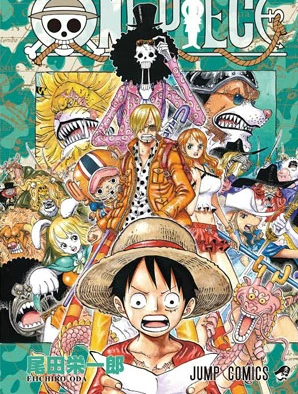

Estes são os principais arcos de One Piece até o início do Arco de Wano. Cada um deles apresenta aventuras emocionantes, personagens cativantes e desenvolvimentos importantes na história.
- Introduz Luffy e seus primeiros companheiros.
- Destaque: Luffy derrota o pirata Arlong e liberta a ilha de Nami.
- Luffy e sua tripulação chegam a Alabasta para enfrentar o vilão Crocodile.
- Destaque: A batalha final entre Luffy e Crocodile para salvar Alabasta.
- Os Piratas do Chapéu de Palha exploram a ilha flutuante de Skypiea e enfrentam o deus Enel.
- Destaque: A busca pela cidade de ouro Shandora e a batalha contra Enel.

- A tripulação chega a Water 7 e enfrenta desafios internos e a ameaça da CP9.
- Destaque: A batalha de Luffy contra Rob Lucci e o resgate de Nico Robin em Enies Lobby.
- Os Piratas do Chapéu de Palha exploram a ilha assombrada de Thriller Bark e enfrentam o Moria.
- Destaque: A luta contra Oars e o surgimento do Shichibukai Gecko Moria.

- A tripulação se reúne, mas enfrenta um confronto traumático com os Tenryubito.
- Destaque: A separação dos membros da tripulação após o incidente em Sabaody.

- A guerra épica entre a Marinha, os Piratas do Barba Branca e os Piratas do Chapéu de Palha para salvar Ace.
- Destaque: A morte de Ace e a intervenção de Shanks para encerrar a guerra.

- A tripulação se separa novamente, e Luffy começa seu treinamento.
- Destaque: Revelações sobre o passado de Jinbe e a formação da aliança com Trafalgar Law.
- Os Piratas do Chapéu de Palha e a Aliança Heart enfrentam o cientista maluco Caesar Clown.
- Destaque: A revelação da verdadeira identidade de Doflamingo e a aliança para derrotá-lo.
- A tripulação enfrenta Donquixote Doflamingo e seus subordinados em Dressrosa.
- Destaque: A batalha final contra Doflamingo e a revelação de que Kaido aguarda em Wano.

- Os Piratas do Chapéu de Palha chegam à ilha de Zou e descobrem segredos sobre os Poneglyphs.
- Destaque: A revelação de informações cruciais sobre o século perdido.
- A tripulação invade o território de Big Mom para resgatar Sanji.
- Destaque: A batalha contra Big Mom e o desenvolvimento do personagem Sanji.
- Uma reunião de líderes mundiais e revelações sobre eventos futuros.
- Destaque: Discussões sobre os Poneglyphs e os Revolucionários.
- A tripulação chega a Wano para enfrentar Kaido e liberar a nação.
- Destaque: A luta de Luffy contra Kaido e a aliança contra as Feras.